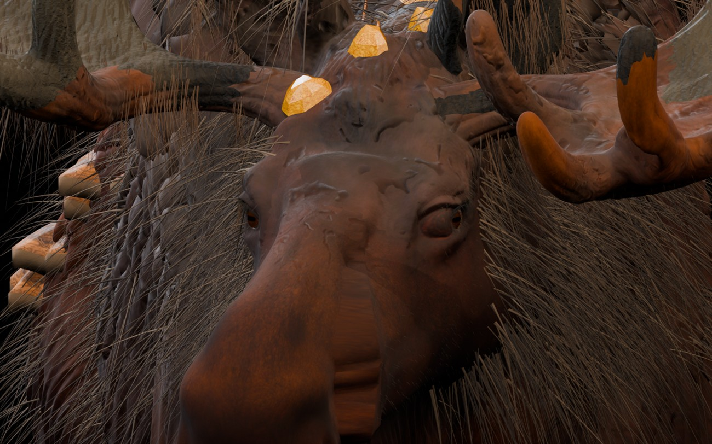
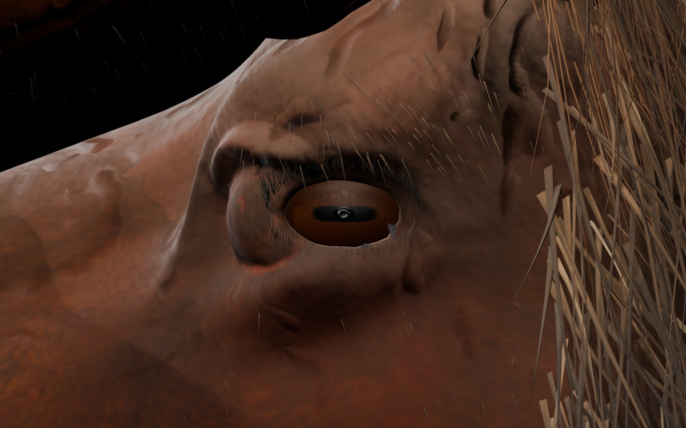

Лесной лось — глаза V31G
Новые контрольные рендеры настоящей 3D-модели в Blender. Пластиковый кольцевой блик в зрачке убран, созданы 4K-материалы коричневой радужки с органическими волокнами, сглажены края век. Шерсть, рога, янтарные кристаллы и форма головы исходной модели сохранены. Выберите ракурс или нажмите на большую фотографию, чтобы открыть оригинал.

1 / 7 · Голова спереди
Проверка глаза: до и после
Снимки сделаны на реальной 3D-геометрии. V31B: сильный световой блик внутри горизонтального зрачка. V31G: отражение убрано в материале самой модели.

Новый материалРадужка 4096×4096, естественный горизонтальный зрачок
Сохранённая модельШерсть, янтарь, 3D-рога, 4K PBR-текстуры тела
Файлы на компьютереРедактируемый BLEND ≈344 МБ, игровой GLB ≈279 МБ